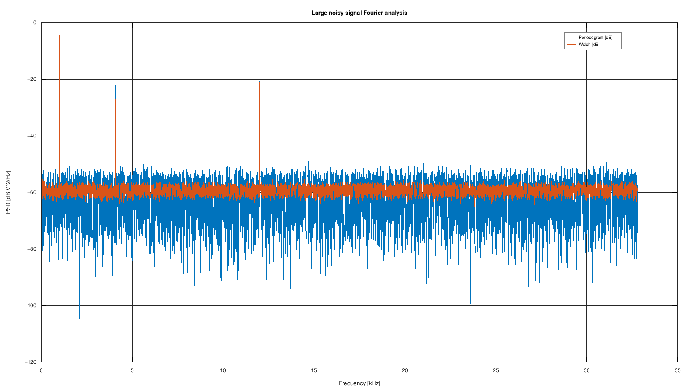

Curated archive GX-TXT_Tutorial_CURATI_con_STFT3_4_20261013.zip; archive SHA256 880b666e02eb1f8a66a9045333ebb44015a10d2f6943612d7878405d37cd70f8
Target: GX-TXT 0.9.8.10-dev-097, Debian. Figures are actual scientific render artifacts from the verified development candidate, not GUI screenshots. Scientific/API/Script evidence is retained. Additional final GUI matrices: NOT RUN — USER-ACCEPTED. Frozen release/package acceptance remains pending; the final release receipt supplies archive identity.
Create a new Session and use Python Script Workspace. Register the supplied source files under their displayed names, select the listed Analysis Source bindings, and run each stage in order. Wait for its Job to complete before the next step. Keep the original source data intact. Save the Session normally; reopening uses its persistent scientific identities.
Keep the original source Dataset unchanged. The plotting selection is a bounded view; it is not the complete statistical population. Set the Job worker budget deliberately before the benchmark. A completed one-worker fallback is not proof of parallel execution.
SHA256 3adcb62509d6b9ef2272ae377480d9e2f3207a1eee80cb5cf254d3194009f0d7SHA256 9eaffe0f8a5511e08327ab7a7b5461a0710564adf0d42fc9ef3adb2d2d589806SHA256 3f03b210f20b61c0f8f8070b8ae21ce7732dc78bf4d57df4974bd54418b9c083SHA256 750762f39f8066859730285bfd78e38648a4dc5ce2f58359bb31ce78e8f064b0| Script | Inputs | Result |
|---|---|---|
01_generate_large_noisy_signal.py | No input | Publish 4,194,304 float64 samples at 65,536 Hz (64 s). |
02_stream_large_dataset_summary.py | primary → tutorial.large_noisy_multitone | Read the complete signal in bounded chunks and publish its summary. |
03_fourier_signal_api.py | primary → tutorial.large_noisy_multitone | Analyze the 524,288-sample middle selection; publish and render periodogram/Welch spectra. |
04_parallel_fft_policy_benchmark_v2.py | primary → tutorial.large_noisy_multitone | Compare serial and permitted parallel execution over sixteen windows. |
The full-array reference gives mean −3.896606812693161e−5 V and RMS 0.7824810221635087 V. The published streaming values agree within 1e−12. The spectra retain 32,769 bins at 1 Hz spacing and resolve the 997, 4,093 and 12,011 Hz tones. The physical acceptance tolerances are |mean| ≤ 0.002 V and RMS within 0.003 V of √0.6125.

2d63578efb5b969d0f9460b288f6dd7905a0a9ff46170a228cd37fa643080305. No historical screenshot is presented as new evidence.CANONICAL_DATASET_API_v2; TABLE_STREAM_API_v3; DATASET_PUBLICATION_API_v2; SIGNAL_API_v1; NUMERIC_API_v1; PARALLEL_EXECUTION_API_v1; PLOT_DATASET_API_v3
Generation/publication took 2.20645 s; its full Job took 8.222 s. Streaming scanned sixteen chunks in 7.4954 s with 33,554,432 raw managed bytes, no numeric text/Base64 payload and at most 2,097,152 outstanding provider bytes. The full Fourier Job took 19.061 s. The default Job budget permits one worker, so the original benchmark correctly fell back to serial execution. A private four-worker check measured serial 0.182869 s and parallel 0.0974697 s (1.87616×); its full Job took 17.578 s. These timings describe this Debian machine, not guaranteed speedups.
Four original Jobs, the explicit four-worker branch and 18 independent scientific checks passed in checkpoint 189.
Job completion alone does not certify scientific values or graph semantics. These guides include independent value checks and actual artifact inspection. Omitted GUI tests are never counted as PASS. A release verification manifest will identify the exact frozen source and package used for installation.